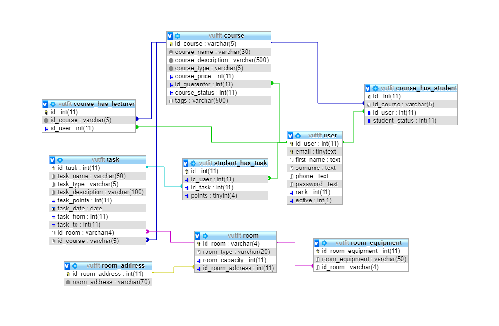

5. ©kola: správa a registrace výukových kurzù
- Autoøi
- Køehlík Petr
xkrehl04@stud.fit.vutbr.cz -
Pøihla¹ování, správa u¾ivatelù, rozvrh, tabulky
- Klobu¹ický Martin
xklobu03@stud.fit.vutbr.cz -
Správa místností, styl stránky
- Záhorský Matej
xzahor04@stud.fit.vutbr.cz -
Správa kurzù, termínù, ¾ádostí
- URL aplikace
- http://www.stud.fit.vutbr.cz/~xkrehl04/
- http://www.xkrehl04.g6.cz/
U¾ivatelé systému pro testování
Uveïte prosím existující zástupce v¹ech rolí u¾ivatelù.
| Login | Heslo | Role |
|---|
| student@a.a | 123 | Student |
| lektor@a.a | 123 | Lektor |
| garant@a.a | 123 | Garant |
| veduci@a.a | 123 | Vedoucí |
| admin@a.a | 123 | Administrátor |
Projekt implementuje pøípady u¾ití podle zadání.
Implementace
Pro implementaci jsme zvolil framework Nette. Projekt je rozdìlený na ¹ablony, presentery a modely. Ka¾dá úroveò u¾ivatelù má vlastní presenter plus je je¹tì dodateèný presenter pro zpracování po¾adavkù na u¾ivatele.
Pro zobrazení dat z databáze jsme pou¾ili ublaboo/datagrid, který poskytuje pøehledné zobrazení dat s filtrováním. Rozvrh se zobrazuje pomocí pluginu timetable.js a zobbrazuje v¹echny termíny, na kterým má daný student pøístup.
Jako základ pro vzhled webu slou¾í Bootstrap 4 a FontAwesome. Vzhled vychází z opensource ¹ablony SB Admin. Web z velké èásti pou¾ívá jQuery a AJAX pro zpracování po¾adavkù a dal¹í roz¹íøení, která jsou dostupná pøímo v Nette.
Notifikace jsou zobrazeny pomocí notify.js a vyskakovací okna pomocí popper.js a modal boxy pomocí Bootstrap.
Ka¾dý presenter pøi své inicializaci nejprve zavolá startUpModel, který se postará o kontrou pøihlá¹ení a jestli má u¾ivatel dostateèná opravnìní, pokud ne tak je pøesmìrován na domovskou stránku.
Pro ka¾dý presenter existuje model, který implementuje èást funkcí, které pou¾ívá. Modely jsou kaskádovì propojené, aby AdminModel mìl pøístup k StudentModel.
Pro presentery existuje globální Latte ¹ablona s hlavièkou webu. Ta poté podle adresy pou¾ívá dal¹í ¹ablony podle presenteru.
Databáze
Hesla jsou v databázi ulo¾ena v za¹ifrované podobì pomocí BCRYPT.

Instalace
Struènì popi¹te:
- Pro správné fungování je potøeba mít nastavený webový server s podporou mod_rewrite (.htaccess je pøilo¾ený a nastavený), nejlépe Apache2.
- Projekt vy¾aduje PHP 7.0 a novìj¹í a MySQL 5.6 a novìj¹í. Vyu¾ívá databázi typu InnoDB.
- Projekt je tøeba rozbalit do slo¾ky webového serveru a pomocí .htaccess nastavit ji¾ zmínìné po¾adavky. Server by mìl být také nastavený, aby pøesmìrovával do slo¾ky www, kde je index.php, do jiných slo¾ek by pøístup nemìl umo¾òovat.
- Pomocí pøilo¾eného skriptu je mo¾né nastavit databázi. To ale není v základu nutné, proto¾e konfiguraèní soubor local.neon, umístìný v app/config, obsahuje nastavení pøipojení k databázi Endory. Je ale mo¾né to zmìnit a pou¾ít pøilo¾ený skript pro inicializaci databáze.
- Pokud se v¹e povede, tak by mìl být web funkèní
Známé problémy